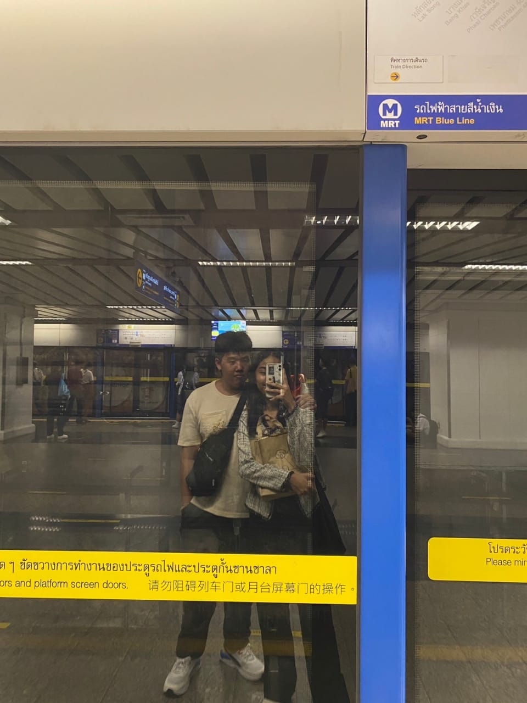
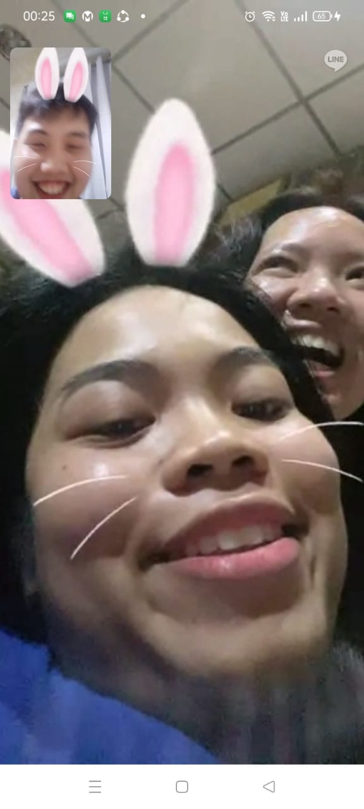

❤️~สุขสันต์วันวาเลนไทน์ Faboo~❤️
Do you like the Papui theme? 5555525255665,
Happy Valentines day my lovee, this is another website for you. Since boo liked Papui (your baby) and it looked cute,
I thought of making the website Papui themed with our fav colourr. Baby, meeting you at UCSI was one the best thing that happend to me.
Being with you, you bring happiness and smiles into my life, teach me to love myself more, and meet your your fam too❤️.
I can also be my complete self around without fear of judgemental, coz you accepted me for for who I am, a bearüêª.
Some say love is like a dance, sometimes I lead, soemtimes you lead, sometimes we may step on each others feet,
but the important thing is we kept dancing and look out for each other, and I am the happiest man to dance with you.
With this Valentine webpage, boo enjoy all the compiled pictures and memories wehave togetherr!
This webpage contains all our sweet memories togetherrr, scroll over the pics to see the message underneathh

This is the time boo met mee at UCSI. I love this pic coz boo is spying on me
(eventhough boo said boo not55555). Boo be like, that fuud(Pason) is soo delishh.
I think this is one of the very first pic of me and u tgtt❤️, so sweet rightt. Your smile is soo beautiful.
But I am too shy to tell you that timeüòÇ. So glad that after on you accepted me as your bear Boyfriend.üêª
Hope you still liekd the gift I gave you that dayy, 55555555. Looking forward to reunite with the others MSU peeps duay.
This pic is just me, coz I think Im handsome in this pic, WHAHAHAHAHAHAH.
This makes me miss the moment so much to moment you guys are hereee, and also
one of the happiest days at UCSI for me. Never expect that my dream came through
The is the moment we met at BKK tgt for the first timee. I had such a great time with you,
(but forgot P'Mew's name 555555). Meeting you was the best christmas gift ever eventhough we are not official yet that time.
Having gift giving at the iconsiam christmas tree, watching an indoor waterfall, walking through the ground floor
market, going to jood fair that have a castle, that day was truly magical. Eventhough met you left than half a day,
its worth every second of it.
This us U and Me wif my parents sitting on the boat on the Chao Praya riverrüòÇ.
Imagine you tell your friends that your BF bought his parents on the first time meeting at BKK tgt, 5555555.
Btw on that day, I really felt that they liked you more than me coz boo is such a good gurl. And also boo during intern
not as stress as now so poor boo too. (definitely not forgeting telling the tourist the wrong direction story too, ei ei eiüòà)
This is boo reading my gift for youuuu, narakkk chai maiiüòç. I still have the pants you gave me and I loved
ittt. Gonna be more fit to look good in it! Im also happi that boo loved my gifttt. Maybe the purse is too small for boo coz
boo have soo much money.
Even after I went back to msia, you still send your daily pics to me bout your life which I loved.
Boo is super cute intern, this also made me realized time goes so fast, but not as fast as me going on a plane to Thailand.
Happi to be able to know boo daily life isss.
Other than you daily life, I also get to know about boo more as boo share your childhood and
personal life too. This pic is super suayyy, boo is superstar jingg. I felt good coz boo is comfortable to share your personal
life with pabooo. wanna try on this shirt again? 555555
I liked this pic especiallyüòÇ, looks like a Mexican Ferns. I loved your sense of humour
coz it brings a smile on my face everyday, even on tough and stress days.
After around 8 months (so fast too), we finally meet againn. This was also the first time I solo
travelled to Thailand. It was so special for us to get to hangout as a cute couple in person for the very first timee.
Still so thanking for boo to accept me for who I am. To be honest, I was super shy at that time, especially when hugging boo
and holding your little handss. But slowly I grow comfortable with uuüꪂù§Ô∏è, till now, I can even share my "thoughts" wif youüòè.
And eventhough sometimes there are hard times between us, Im so grateful to have boo because you
went through it and work it out together with me. Through good times and also struggles, our bond becomes stronger⭐.
And in this pic, thank you for your fam and especially P'Eve for bringing me to CU. It was a
dream come true for me as I always heard good things bout here and always see its images in the Internet and I finally got to go there.
Thanks to her fam too for treating me super gooddd.And P'Eve dad for driving me home safelyy.

This is the pic of my last day during my 4 day visitt, can't believe its August last year, so fast.
I missed boo so much that day evethough i did not cry and boo did a super cry. Glad we had our time tgt too, especially at
Horsamut restaurantt‚ù§Ô∏è‚ù§Ô∏è. And also loved the time in the hotel doing unboxingüòè the Capybara, I bring it to intern work
everydayy to remind of our guud timee~

After I went back againz for my internship, we contacted each other a lot tooo,
boo shared lots of your moments wif me, and I even took lots of screenshots in which this is my favouriteüòÇ.
Thanks for boo for tolerating me during on of my most stressful time handling all the work and new things during
internship.üôè Love boo mak makkk
After 4 months of intern, I visit Thailand againzz (from Intern salaryüòÇ), hahahaah
I was so surprised to be able to meet your fam during this visit, even having my mom with me tooo❤️.
I am soo happy that boo loved the gift I gave uu. Since its a longer visit, I get the chance to do more things with boo
and we did! Btw, the cake at the place, super delishhh, thanks for suggesting that placeee, and
traveleld so farr to meet with meü§©
This is the day you gave me my gifttt❤️, I was surprised coz I did not expect such a nice
expensive customized pen at allüòÇ (and sorry to P'Eve who became Steve). And this is also the last day I met boo
for the visit. Even so, its still an awesome day coz you and P'Eve are in it.
And for this, I cant thank you enough, really did not expect a surprise early birthday celebration at all
like dangss, another surprise birthday in years, last time was during 13 years old in high school. I am also
so glad to meet gurl boss P'Mew at that time and thank you soo much for her gift. She gives off girl boss aura.
And this is one of my most favourite pics and activity wif boo during my visitü§©.
I decided to do it coz boo has adventured most of bkk and this was unique to both of uss. I was nervous at first coz
afraid that it might be not as fun as a activity for us a couple, but so glad to turned out super welll. Our official first
couple shirtt. The vid that boo edited was super romantic, I loved it!
This was the moment I visit P'Tum place with boo and famm. I didt expect this at all.
It was such a unique experience for meee and I am so glad I get to bond wif your fam tooo, also other relatives, your mom
and your dadüòÇ(he was super nice coz I am good boy). I also get to understand boo life better and do things wif boo,
ei ei eiiii. And secretly touch your butt.
Lastly, I loved this pic, coz its a pic of me with your fam, and you being comfortable to
open me up to your familyyy❤️, Happy Valentines Day babeee
More in futuree
üåπYour flowerrüåπ
Naughty sectionüòà
UOB
~ Estimated countdown to next kissüíã ~